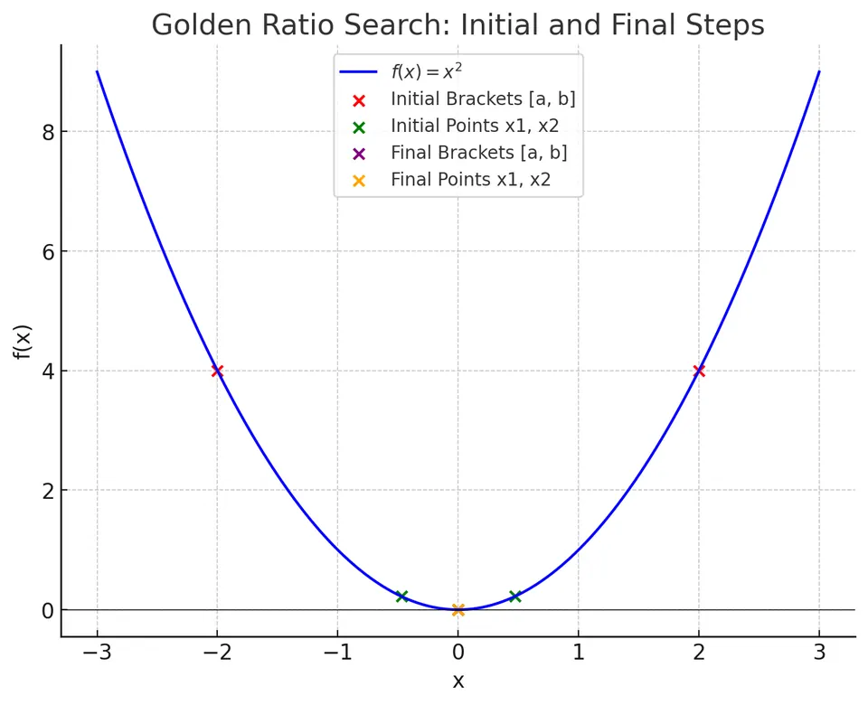

The Golden Ratio Search is a technique employed for locating the extremum (minimum or maximum) of a unimodal function over a given interval. Unlike gradient-based or derivative-requiring methods, this approach uses only function evaluations, making it broadly applicable even when derivatives are difficult or impossible to compute. The method takes its name from the special constant known as the golden ratio $\phi$, which uniquely balances intervals to reduce the problem domain efficiently.
For a unimodal function $f(x)$ defined on an interval $[a,b]$, the Golden Ratio Search progressively narrows down the search interval by evaluating the function at two strategically chosen internal points. By leveraging the intrinsic ratio $\phi$, each iteration reduces the size of the interval while ensuring that no potential minima are prematurely excluded. This process continues until the interval is sufficiently small, providing an approximation to the function’s minimum (or maximum, if desired by adjusting the comparison conditions).
Conceptual Illustration:
Imagine the graph of a unimodal function $f(x)$. The goal is to isolate the minimum within a progressively smaller bracket. Initially, we have the interval $[a,b]$:

We pick two points $x_1$ and $x_2$ inside $[a,b]$ using the golden ratio partitioning. Based on the function values at these points, we eliminate a portion of the interval that cannot contain the minimum. This procedure repeats, each time reducing the interval size while maintaining the guarantee of containing the minimum.
The golden ratio is defined as:
$$\phi = \frac{1 + \sqrt{5}}{2} \approx 1.618.$$
This constant has unique properties, notably:
$$\frac{1}{\phi} = \phi - 1 \approx 0.618.$$
To apply the Golden Ratio Search for minimization, we start with an interval $[a,b]$ and choose two internal points $x_1$ and $x_2$ such that:
$$x_1 = b - \frac{b-a}{\phi}, \quad x_2 = a + \frac{b-a}{\phi}.$$
It follows from this construction that:
$$\frac{x_2 - a}{b - x_1} = \phi.$$
Because of how $\phi$ partitions the interval, the ratio of the smaller subinterval to the larger subinterval is equal to $1/\phi$, ensuring a consistent and balanced reduction.
I. Unimodality Assumption:
Assume $f(x)$ is unimodal on $[a,b]$, meaning it has a single minimum within that interval. Without loss of generality, we focus on minimizing $f(x)$.
II. Golden Ratio Partition:
Given the interval $[a,b]$, we introduce points $x_1$ and $x_2$ as described:
$$x_1 = b - \frac{b-a}{\phi}, \quad x_2 = a + \frac{b-a}{\phi}.$$
By doing so, we ensure:
$$x_1 < x_2, \quad a < x_1 < x_2 < b.$$
III. Decision Criterion:
We evaluate $f(x_1)$ and $f(x_2)$:
In either case, the length of the interval is reduced by a factor approximately $\frac{1}{\phi}$ each iteration, ensuring rapid convergence.
IV. Convergence:
After $n$ iterations, the length of the interval is:
$$|b - a| \left(\frac{1}{\phi}\right)^n.$$
Once this length is less than a prescribed tolerance $\epsilon$, we accept that the minimum is approximated by any point within the current interval.
Input:
Initialization:
Iteration:
I. Compute:
$$x_1 = b - \frac{b-a}{\phi}, \quad x_2 = a + \frac{b-a}{\phi}.$$
II. Evaluate $f(x_1)$ and $f(x_2)$.
III. If $f(x_1) > f(x_2)$:
Set $a = x_1$.
(The minimum is in the interval $\[x_1,b\]$)
Else:
Set $b = x_2$.
(The minimum is in the interval $\[a,x_2\]$)
IV. If $|b-a| < \epsilon$ or $k \geq n_{\max}$:
Stop and approximate the minimum as $\frac{a+b}{2}$.
V. Increment iteration counter $k = k+1$ and go back to step I.
Output:
Given Function:
$$f(x) = x^2.$$
We know that $f(x)=x^2$ is unimodal (in fact, strictly convex) on any interval, and it attains its minimum at $x=0$.
Initial Setup:
$$a = -2, \quad b = 2, \quad \phi = \frac{1+\sqrt{5}}{2} \approx 1.618.$$
Iteration 1:
Compute:
$$ x_1 = b - \frac{b-a}{\phi} = 2 - \frac{2 - (-2)}{1.618} = 2 - \frac{4}{1.618} \approx 2 - 2.472 \approx - 0.472. $$
$$x_2 = a + \frac{b-a}{\phi} = -2 + \frac{4}{1.618} \approx - 2 + 2.472 = 0.472.$$
Evaluate:
$$f(x_1) = (-0.472)^2 \approx 0.2225, \quad f(x_2) = (0.472)^2 \approx 0.2225.$$
Since $f(x_1) = f(x_2)$, we can choose either subinterval. Let’s choose $[a,b] = [-2, x_2] = [-2, 0.472]$ for simplicity. So:
$$b = 0.472.$$
Iteration 2:
New interval: $[a,b] = [-2,0.472]$
Compute new points:
$$ x_1 = b - \frac{b-a}{\phi} = 0.472 - \frac{0.472 - (-2)}{1.618} = 0.472 - \frac{2.472}{1.618} \approx 0.472 - 1.526 \approx - 1.054. $$
$$x_2 = a + \frac{b-a}{\phi} = -2 + \frac{2.472}{1.618} \approx - 2 + 1.526 = -0.474.$$
Evaluate:
$$f(x_1) = (-1.054)^2 \approx 1.110, \quad f(x_2) = (-0.474)^2 \approx 0.224.$$
Compare:
$$f(x_1) = 1.110, \quad f(x_2) = 0.224.$$
Since $f(x_1) > f(x_2)$, the minimum lies in $[x_1,b] = [-1.054,0.472]$? Actually, check logic:
We found $f(x_1) > f(x_2)$, which means the smaller value is at $x_2$. Thus, we keep the interval on the side of $x_2$ because that is where the minimum is. According to the rules:
If $f(x_1) > f(x_2)$, we set:
$$a = x_1 = -1.054$$
maintaining $[a,b] = [-1.054, 0.472]$.
Subsequent Iterations:
At each iteration, you would similarly compute new $x_1, x_2$, evaluate $f(x_1)$ and $f(x_2)$, and narrow down the interval. Ultimately, as you continue, the interval will shrink around $x=0$, since $f(x) = x^2$ achieves its minimum at $x=0$.